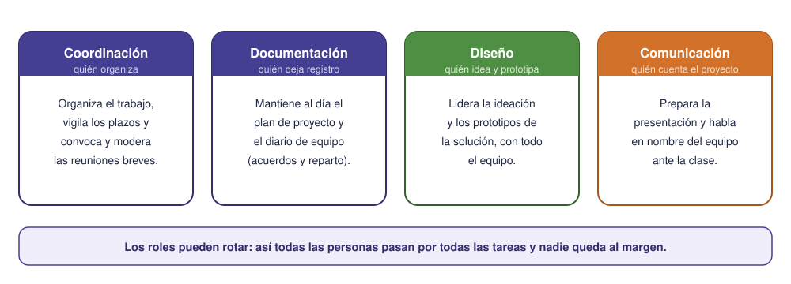

Contenido
Tecnología y productos tecnológicos
La tecnología es el conjunto de conocimientos científicos y técnicos que se aplican de forma ordenada para resolver un problema o satisfacer una necesidad. El resultado de esa actividad es un producto tecnológico.
Los productos tecnológicos se clasifican en tres tipos:
- Bienes: objetos materiales y tangibles (una bicicleta, un móvil, una prótesis).
- Servicios: prestaciones intangibles que cubren una necesidad (el suministro eléctrico, una app de transporte).
- Procesos: secuencias de operaciones para obtener un bien o servicio (la línea de montaje de un coche).
Ética y límites de la tecnología
La actividad tecnológica tiene límites: el uso responsable de los recursos naturales y el deber de no aumentar la desigualdad. Una buena ingeniera no se pregunta solo si algo se puede hacer, sino si debe hacerse y a quién beneficia.
¿Qué es un proyecto?
Un proyecto es un trabajo planificado para lograr un objetivo concreto con un plazo, unos recursos limitados y, casi siempre, un equipo. Tres rasgos lo definen:
- Tiene un principio y un final (no es una tarea rutinaria que se repite indefinidamente).
- Persigue un resultado único (un producto o una mejora que antes no existía).
- Requiere coordinar personas, tiempos y medios.
Gestionar un proyecto es precisamente eso: decidir qué hay que hacer, en qué orden, quién lo hace y cuándo, y luego seguir su avance para corregir a tiempo. Es lo que aprenderás a hacer en esta unidad.
Trabajo en equipo y roles
Un proyecto no lo saca adelante una persona: lo saca un equipo que colabora. Y colaborar no es solo «repartirse el trabajo»: es organizarse, escucharse y cuidar cómo se trabaja juntos. Para que un equipo funcione ayudan cuatro cosas.
1. Roles claros. Cada persona asume una responsabilidad principal, sin que eso signifique que trabaja sola: las decisiones importantes se toman entre todos.

Los roles pueden rotar a lo largo de la unidad: es buena idea que todo el mundo pase por más de uno.
2. Reuniones breves. Sincronizarse a menudo y en poco tiempo: qué hice, qué voy a hacer, qué me bloquea. Mejor cinco minutos seguidos que media hora dispersa. (En la S7 verás que Scrum le pone nombre a esto: la reunión diaria.)
3. Relaciones saludables e inclusivas. Un equipo funciona cuando todas las voces tienen sitio: escuchar a quien habla menos, repartir el trabajo de forma justa (no siempre lo mismo para la misma persona) y resolver los desacuerdos con respeto, discutiendo ideas y no personas. Un desacuerdo bien llevado suele mejorar la solución.
4. Diario de equipo. Un registro corto, sesión a sesión, de los acuerdos, el reparto de tareas y los problemas que han surgido. Sirve para no repetir errores, para que nadie se pierda y para dejar constancia de cómo ha trabajado el equipo.
Buenas prácticas del equipo
El reparto justo del trabajo, la escucha y el cuidado del diario se registran a lo largo de la unidad como parte del seguimiento del trabajo en equipo. No forman parte de la nota de los criterios: son la forma de trabajar que se espera de un equipo de ingeniería.
Tarea del proyecto
Forma tu equipo
TRABAJO EN EQUIPO una sola entrega por equipo
Formad equipos de 3 o 4 personas y repartíos un rol cada uno con la tabla de arriba. Abrid también el diario de equipo: bastan tres líneas por sesión. Anotad el nombre del proyecto, los roles y el enlace al diario en la plantilla del plan de proyecto del equipo (enlace en la portada).
Ejercicios
Recuerda
TRABAJO INDIVIDUAL cada persona entrega el suyo
Resuelve primero en el cuaderno y luego pasa tus respuestas a tu copia de la plantilla en Drive (la que creaste desde la portada). Al terminar la unidad, descarga la plantilla en PDF (Archivo → Descargar → Documento PDF) y súbelo a la tarea Ejercicios de la unidad de Moodle. La tarea está abierta desde la primera sesión, pero no pulses «Entregar» hasta la última: es un solo documento con los ejercicios de las nueve.
- Clasifica como bien, servicio o proceso: una impresora 3D, el servicio de préstamo de la biblioteca, la fabricación del pan en un obrador, una app de mensajería.
- Escribe dos necesidades de tu entorno (centro, barrio, casa) que podrían resolverse con un producto tecnológico. Las usaréis en la sesión 2.
- Razona un ejemplo en el que un avance tecnológico haya tenido a la vez efectos positivos y negativos.
- De los cuatro apoyos del trabajo en equipo (roles claros, reuniones breves, relaciones inclusivas, diario), ¿cuál crees que se descuida más en los trabajos de grupo? Explica qué problema concreto provoca descuidarlo.
Clasifica
Arrastra cada ejemplo a su tipo de producto tecnológico. Recuerda: los bienes se pueden tocar, los servicios no, y los procesos son la secuencia de operaciones que produce los otros dos.